111
CAPÍTULO 2 - Número de diagonais de um polígono convexo
A diagonal de um polígono convexo
é o segmento de reta que une um vértice a outro não consecutivo.
Observe a seguir as diagonais do quadrilátero:
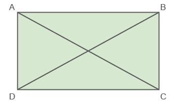
O quadrilátero tem duas diagonais:
e
.
Agora, veja as diagonais do pentágono:
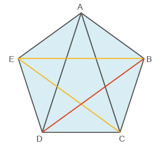
Observe que de cada vértice partem duas diagonais. Então, como esse
polígono tem 5 vértices, poderíamos pensar que ele tem 10 diagonais.
Porém, note que cada diagonal foi contada duas vezes, pois cada
diagonal tem extremidade em dois vértices. Por exemplo:
e
são a mesma diagonal. Portanto,
para determinar o número de diagonais de um polígono, devemos
multiplicar o número de vértices (ou lados) do polígono pelo número de
diagonais que partem cada vértice, dividindo o resultado por 2. No
caso do pentágono, temos:
número de lados (n): 5
número de diagonais que partem de cada vértice: 2
número de diagonais (d):
d = 5
Logo, o pentágono tem 5 diagonais.
112
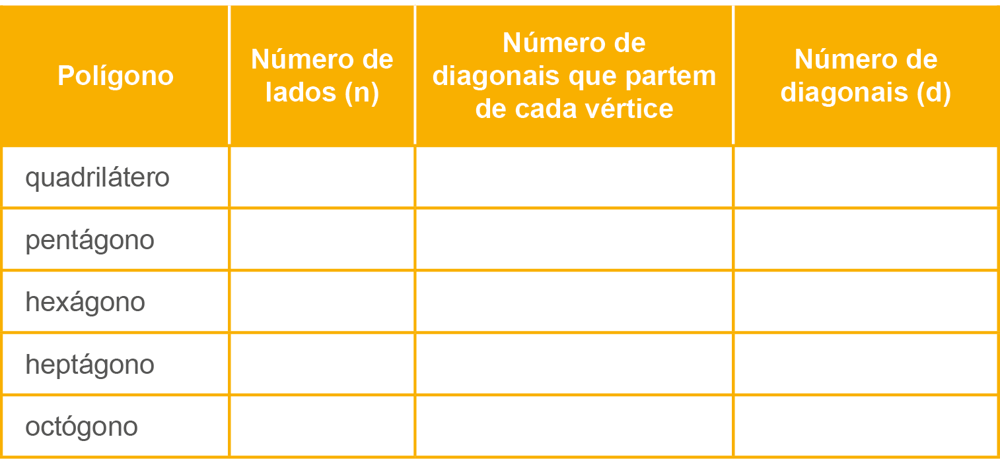
Feito isso, respondam:
Comparando o número de diagonais que partem de cada um dos vértices
com o número de lados do polígono, o que vocês observam?
Multiplique o número de lados pelo número de diagonais que partem de
cada vértice. Depois, compare o resultado com o número total de
diagonais de cada um dos polígonos. Qual relação pode ser
estabelecida?
Sendo n o número de lados e
d o número total de diagonais de
um polígono. Qual relação nos permite calcular o número total de
diagonais?
O número total de diagonais (d) de um polígono de n lados pode ser calculado por meio da relação:
Observe a situação a seguir:
Determine o número de diagonais de um eneágono, polígono de nove
lados.
Assim:
n = 9
113
Substituindo os valores:
Logo, o eneágono tem 27 diagonais.
Reinaldo Rosa/Acervo da Editora
Encontre soluções
Calcule, em seu caderno, o número de diagonais de um:
octógono;
decágono;
dodecágono;
polígono de 16 lados;
polígono de 18 lados;
polígono de 22 lados.
Em qual polígono o número de diagonais é igual ao número de lados?
Quantas diagonais possui um icoságono?
A soma das medidas dos ângulos internos de um polígono é igual a 2
160º. Quantas diagonais esse polígono tem?
Um polígono tem o número de diagonais igual ao quádruplo do número
de lados. Quantos lados esse polígono tem?
Calcule a soma do número de diagonais de um heptágono com o número
de diagonais de um octógono.
Qual é o polígono cujo número de lados equivale a
do número de diagonais?
Num polígono, são 12 as diagonais que partem de cada vértice. Qual
polígono é esse? Qual é o total de diagonais?
Determine o número de diagonais de um polígono regular convexo cujo
ângulo externo é igual a 20º.
Qual polígono regular apresenta, a partir de cada vértice, o número
de diagonais equivalente ao número total de diagonais de um
heptágono?
Desenhe o polígono dado e trace todas as diagonais que partem de um
mesmo vértice.
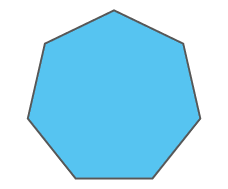
A seguir, responda:
Ao traçar as diagonais, quantos triângulos foram formados?
Qual é a soma dos ângulos internos desse polígono?
Quantas diagonais esse polígono apresenta?
114
Probabilidade e estatística
Medidas de tendência central e de dispersão
Em estatística utilizamos as medidas de tendência central para
representar informações de forma resumida como, por exemplo, os dados
apresentados em uma lista. Vamos retomar como calculamos a moda,
mediana e média.
Moda: é seu valor mais
recorrente de um conjunto de dados.
Mediana: é o valor que ocupa a
posição central dos valores quando organizamos esses dados em ordem.
Média: podemos determinar a
média aritmética simples com a soma de todos os elementos e dividir
pela quantidade de elementos. Há também a média aritmética
ponderada, onde consideramos pesos para os valores.
Vejamos um exemplo:
Na sala de aula do 8.º ano, o professor gostaria de analisar os dados
obtendo as medidas de tendência central. Para isso, ele retirou do
diário de classe as notas dos seus alunos ao final do bimestre:
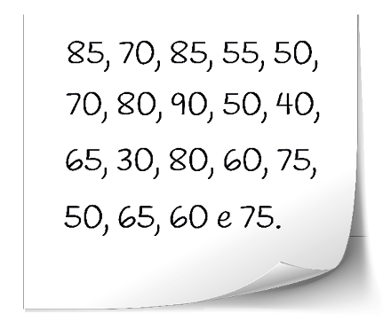
Moda: observando as notas, temos que o valor mais frequente é 50.
Mediana: 30, 40, 50, 50, 50, 55, 60, 60, 65, 65, 70, 70, 75, 75, 80,
80, 85, 85, 90. Assim, a mediana é 65.
115
Média aritmética: 65, pois
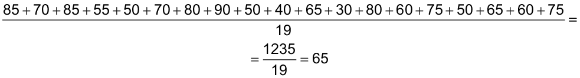
Há também as medidas de dispersão que geralmente são utilizadas para
determinar o grau de variação dos dados em relação à sua média.
Amplitude: é a diferença entre o
maior e o menor valor que os dados assumem no conjunto.
Desvio: é a diferença entre um
valor de um conjunto de dados e a sua média aritmética.
Em nosso exemplo temos as notas 85, 70, 85, 55, 50, 70, 80, 90, 50,
40, 65, 30, 80, 60, 75, 50, 65, 60 e 75.
A amplitude é dada por: 90
- 30
=
60.
Desvio das 5 primeiras notas, considerando a média 65:
d1 = 85
- 65
=
20
d2 = 70
- 65
=
10
d3 = 85
- 65
=
20
d4 = 55
- 65
=
-10
Faça uma lista a partir do levantamento de suas notas desse ano e
determine a moda, a mediana, a média aritmética, a amplitude e o
desvio das 5 primeiras notas.
Você já ouviu falar de amplitude térmica?
Amplitude térmica é uma expressão utilizada para indicar a diferença
entre a temperatura máxima e mínima registradas em um mesmo lugar
durante certo período.
116
RelembrE
A soma das medidas dos ângulos internos de um heptágono é igual à
soma das medidas de:
7 ângulos retos;
8 ângulos retos;
9 ângulos retos;
10 ângulos retos.
Os ângulos internos de um triângulo medem
x,
y e
z. Sabe-se que
x supera
y em 12º e que
z supera
x em 36º. Determine as medidas
x,
y e
z respectivamente.
A diferença entre a soma das medidas dos ângulos internos de um
polígono de 13 lados e a de um icoságono é igual a:
1 980º
1 260º
3 240º
0º
Considere o seguinte polígono:
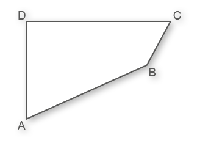
Determine a medida da soma
das medidas dos seus ângulos internos.
Qual é o polígono cuja medida do ângulo externo é igual à medida do
ângulo interno?
Eneágono.
Octógono.
Hexágono.
Quadrilátero.
As medidas dos ângulos externos e internos de um polígono regular de
12 lados são, respectivamente, ae
e ai. Então, 3 · ae
+ 4 · ai
é igual a:
210º
570º
690º
1 050º
Determine o número de diagonais do polígono abaixo.
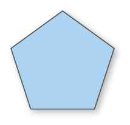
(UEL-PR) Um azulejista tem à sua disposição peças de cerâmicas em
forma dos seguintes polígonos regulares: quadrados, triângulos e
hexágonos, todos com a mesma medida do lado. Ele pretende pavimentar
uma superfície plana, colocando as peças lado a lado, sem deixar
espaço entre elas e sem haver sobreposição de peças. Os vértices das
peças que se encaixam devem coincidir num ponto chamado “nó”.
Qual das alternativas
abaixo descreve uma sequência de polígonos que não possibilita formar
um nó?
triângulo, triângulo, triângulo, quadrado, quadrado
triângulo, triângulo, quadrado, triângulo, quadrado
triângulo, hexágono, triângulo, hexágono
triângulo, quadrado, hexágono, quadrado
triângulo, triângulo, quadrado, quadrado, quadrado
117
O polígono cujo número de diagonais é igual ao triplo do número de
lados é o:
heptágono;
octógono;
eneágono;
decágono.
A medida do ângulo externo de um polígono regular é 36º. O número de
diagonais desse polígono é igual a:
35
50
75
90
A soma das medidas dos ângulos internos de um polígono é igual a 1
080º. Quantas diagonais esse polígono tem?
10
15
20
25
Qual das seguintes afirmações está correta?
O número de diagonais de um hexágono é 5.
O polígono regular em que a medida do ângulo externo é igual a
40º é o octógono.
A soma das medidas dos ângulos internos de um pentágono é o
dobro de 260º.
A medida do ângulo interno de um polígono regular de 12 lados é
150º.
Na figura abaixo, as retas r e
s são paralelas. Determine a
medida de y.
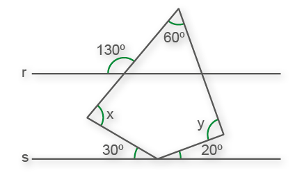
(Mackenzie-SP) Os ângulos externos de um polígono regular medem 20º.
Então, o número de diagonais desse polígono é:
90
104
119
135
152
(ENEM) Na construção civil, é muito comum a utilização de ladrilhos
ou azulejos com a forma de polígonos para o revestimento de pisos ou
paredes. Entretanto, não são todas as combinações de polígonos que
se prestam a pavimentar uma superfície plana, sem que haja falhas ou
superposições de ladrilhos, como ilustram as figuras:

A tabela traz uma relação de
alguns polígonos regulares, com as respectivas medidas de seus ângulos
internos.

Se um arquiteto deseja utilizar uma combinação de dois tipos
diferentes de ladrilhos entre os polígonos da tabela, sendo um deles
octogonal, o outro tipo escolhido deverá ter a forma de um:
triângulo
quadrado
pentágono
hexágono
eneágono
A diagonal de um polígono convexo é o segmento de reta que une um vértice a outro não consecutivo.
Observe a seguir as diagonais do quadrilátero:
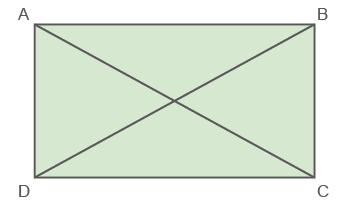
O quadrilátero tem duas diagonais: e .
Agora, veja as diagonais do pentágono:
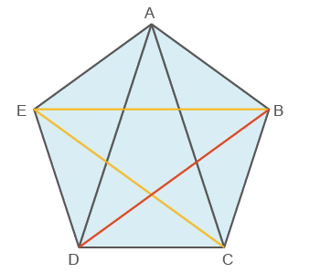
Observe que de cada vértice partem duas diagonais. Então, como esse polígono tem 5 vértices, poderíamos pensar que ele tem 10 diagonais. Porém, note que cada diagonal foi contada duas vezes, pois cada diagonal tem extremidade em dois vértices. Por exemplo: e são a mesma diagonal. Portanto, para determinar o número de diagonais de um polígono, devemos multiplicar o número de vértices (ou lados) do polígono pelo número de diagonais que partem cada vértice, dividindo o resultado por 2. No caso do pentágono, temos:
número de lados (n): 5
número de diagonais que partem de cada vértice: 2
número de diagonais (d):
d = 5
Logo, o pentágono tem 5 diagonais.
112
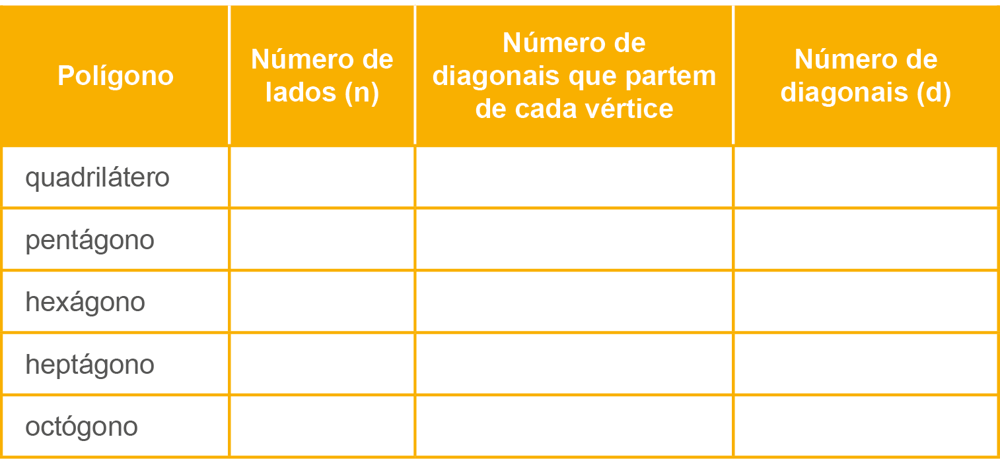
Feito isso, respondam:
Comparando o número de diagonais que partem de cada um dos vértices com o número de lados do polígono, o que vocês observam?
Multiplique o número de lados pelo número de diagonais que partem de cada vértice. Depois, compare o resultado com o número total de diagonais de cada um dos polígonos. Qual relação pode ser estabelecida?
Sendo n o número de lados e d o número total de diagonais de um polígono. Qual relação nos permite calcular o número total de diagonais?
O número total de diagonais (d) de um polígono de n lados pode ser calculado por meio da relação:
Observe a situação a seguir:
Determine o número de diagonais de um eneágono, polígono de nove lados.
Assim:
n = 9
113
Substituindo os valores:
Logo, o eneágono tem 27 diagonais.
Reinaldo Rosa/Acervo da Editora
Encontre soluções
Calcule, em seu caderno, o número de diagonais de um:
octógono;
decágono;
dodecágono;
polígono de 16 lados;
polígono de 18 lados;
polígono de 22 lados.
Em qual polígono o número de diagonais é igual ao número de lados?
Quantas diagonais possui um icoságono?
A soma das medidas dos ângulos internos de um polígono é igual a 2 160º. Quantas diagonais esse polígono tem?
Um polígono tem o número de diagonais igual ao quádruplo do número de lados. Quantos lados esse polígono tem?
Calcule a soma do número de diagonais de um heptágono com o número de diagonais de um octógono.
Qual é o polígono cujo número de lados equivale a do número de diagonais?
Num polígono, são 12 as diagonais que partem de cada vértice. Qual polígono é esse? Qual é o total de diagonais?
Determine o número de diagonais de um polígono regular convexo cujo ângulo externo é igual a 20º.
Qual polígono regular apresenta, a partir de cada vértice, o número de diagonais equivalente ao número total de diagonais de um heptágono?
Desenhe o polígono dado e trace todas as diagonais que partem de um mesmo vértice.
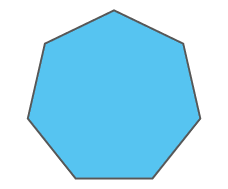
A seguir, responda:
Ao traçar as diagonais, quantos triângulos foram formados?
Qual é a soma dos ângulos internos desse polígono?
Quantas diagonais esse polígono apresenta?
114
Probabilidade e estatística
Medidas de tendência central e de dispersão
Em estatística utilizamos as medidas de tendência central para representar informações de forma resumida como, por exemplo, os dados apresentados em uma lista. Vamos retomar como calculamos a moda, mediana e média.
Moda: é seu valor mais recorrente de um conjunto de dados.
Mediana: é o valor que ocupa a posição central dos valores quando organizamos esses dados em ordem.
Média: podemos determinar a média aritmética simples com a soma de todos os elementos e dividir pela quantidade de elementos. Há também a média aritmética ponderada, onde consideramos pesos para os valores.
Vejamos um exemplo:
Na sala de aula do 8.º ano, o professor gostaria de analisar os dados obtendo as medidas de tendência central. Para isso, ele retirou do diário de classe as notas dos seus alunos ao final do bimestre:
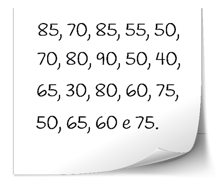Moda: observando as notas, temos que o valor mais frequente é 50.
Mediana: 30, 40, 50, 50, 50, 55, 60, 60, 65, 65, 70, 70, 75, 75, 80, 80, 85, 85, 90. Assim, a mediana é 65.
115
Média aritmética: 65, pois
Há também as medidas de dispersão que geralmente são utilizadas para determinar o grau de variação dos dados em relação à sua média.
Amplitude: é a diferença entre o maior e o menor valor que os dados assumem no conjunto.
Desvio: é a diferença entre um valor de um conjunto de dados e a sua média aritmética.
Em nosso exemplo temos as notas 85, 70, 85, 55, 50, 70, 80, 90, 50, 40, 65, 30, 80, 60, 75, 50, 65, 60 e 75.
A amplitude é dada por: 90 - 30 = 60.
Desvio das 5 primeiras notas, considerando a média 65:
d1 = 85 - 65 = 20
d2 = 70 - 65 = 10
d3 = 85 - 65 = 20
d4 = 55 - 65 = -10
Faça uma lista a partir do levantamento de suas notas desse ano e determine a moda, a mediana, a média aritmética, a amplitude e o desvio das 5 primeiras notas.
Você já ouviu falar de amplitude térmica?
Amplitude térmica é uma expressão utilizada para indicar a diferença entre a temperatura máxima e mínima registradas em um mesmo lugar durante certo período.
116
RelembrE
A soma das medidas dos ângulos internos de um heptágono é igual à soma das medidas de:
7 ângulos retos;
8 ângulos retos;
9 ângulos retos;
10 ângulos retos.
Os ângulos internos de um triângulo medem x, y e z. Sabe-se que x supera y em 12º e que z supera x em 36º. Determine as medidas x, y e z respectivamente.
A diferença entre a soma das medidas dos ângulos internos de um polígono de 13 lados e a de um icoságono é igual a:
1 980º
1 260º
3 240º
0º
Considere o seguinte polígono:
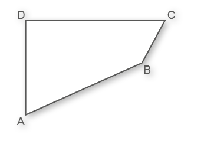
Determine a medida da soma das medidas dos seus ângulos internos.
Qual é o polígono cuja medida do ângulo externo é igual à medida do ângulo interno?
Eneágono.
Octógono.
Hexágono.
Quadrilátero.
As medidas dos ângulos externos e internos de um polígono regular de 12 lados são, respectivamente, ae e ai. Então, 3 · ae + 4 · ai é igual a:
210º
570º
690º
1 050º
Determine o número de diagonais do polígono abaixo.
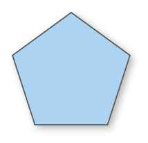
(UEL-PR) Um azulejista tem à sua disposição peças de cerâmicas em forma dos seguintes polígonos regulares: quadrados, triângulos e hexágonos, todos com a mesma medida do lado. Ele pretende pavimentar uma superfície plana, colocando as peças lado a lado, sem deixar espaço entre elas e sem haver sobreposição de peças. Os vértices das peças que se encaixam devem coincidir num ponto chamado “nó”.
Qual das alternativas abaixo descreve uma sequência de polígonos que não possibilita formar um nó?
triângulo, triângulo, triângulo, quadrado, quadrado
triângulo, triângulo, quadrado, triângulo, quadrado
triângulo, hexágono, triângulo, hexágono
triângulo, quadrado, hexágono, quadrado
triângulo, triângulo, quadrado, quadrado, quadrado
117
O polígono cujo número de diagonais é igual ao triplo do número de lados é o:
heptágono;
octógono;
eneágono;
decágono.
A medida do ângulo externo de um polígono regular é 36º. O número de diagonais desse polígono é igual a:
35
50
75
90
A soma das medidas dos ângulos internos de um polígono é igual a 1 080º. Quantas diagonais esse polígono tem?
10
15
20
25
Qual das seguintes afirmações está correta?
O número de diagonais de um hexágono é 5.
O polígono regular em que a medida do ângulo externo é igual a 40º é o octógono.
A soma das medidas dos ângulos internos de um pentágono é o dobro de 260º.
A medida do ângulo interno de um polígono regular de 12 lados é 150º.
Na figura abaixo, as retas r e s são paralelas. Determine a medida de y.
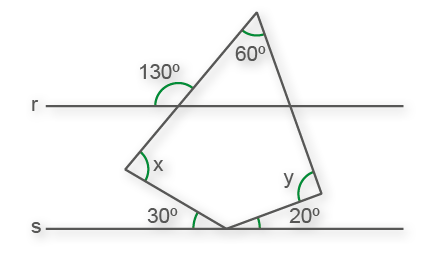
(Mackenzie-SP) Os ângulos externos de um polígono regular medem 20º. Então, o número de diagonais desse polígono é:
90
104
119
135
152
(ENEM) Na construção civil, é muito comum a utilização de ladrilhos ou azulejos com a forma de polígonos para o revestimento de pisos ou paredes. Entretanto, não são todas as combinações de polígonos que se prestam a pavimentar uma superfície plana, sem que haja falhas ou superposições de ladrilhos, como ilustram as figuras:
A tabela traz uma relação de alguns polígonos regulares, com as respectivas medidas de seus ângulos internos.
Se um arquiteto deseja utilizar uma combinação de dois tipos diferentes de ladrilhos entre os polígonos da tabela, sendo um deles octogonal, o outro tipo escolhido deverá ter a forma de um:
triângulo
quadrado
pentágono
hexágono
eneágono